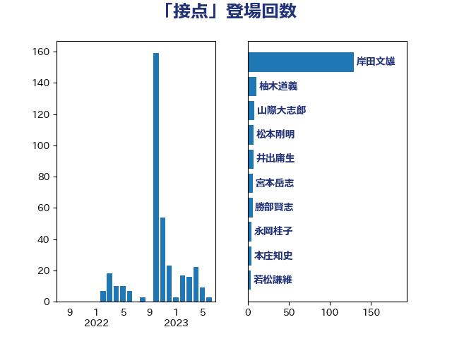

単語「接点」

| 岸田文雄 | 自由民主党 | 129 回 |
| 柚木道義 | 立憲民主党 | 11 回 |
| 山際大志郎 | 自由民主党 | 8 回 |
| 松本剛明 | 自由民主党 | 7 回 |
| 井出庸生 | 自由民主党 | 7 回 |
| 宮本岳志 | 日本共産党 | 6 回 |
| 勝部賢志 | 立憲民主党 | 6 回 |
| 永岡桂子 | 自由民主党 | 5 回 |
| 本庄知史 | 立憲民主党 | 5 回 |
| 若松謙維 | 公明党 | 4 回 |
| 松野博一 | 自由民主党 | 4 回 |
| 山添拓 | 日本共産党 | 4 回 |
| 中川貴元 | 自由民主党 | 4 回 |
| 赤木正幸 | 日本維新の会 | 3 回 |
| 赤嶺政賢 | 日本共産党 | 3 回 |
| 田島麻衣子 | 立憲民主党 | 3 回 |
| 杉本和巳 | 日本維新の会 | 3 回 |
| 志位和夫 | 日本共産党 | 3 回 |
| 塩川鉄也 | 日本共産党 | 3 回 |
| 伊藤岳 | 日本共産党 | 3 回 |
| 高市早苗 | 自由民主党 | 2 回 |
| 音喜多駿 | 日本維新の会 | 2 回 |
| 近藤和也 | 立憲民主党 | 2 回 |
| 萩生田光一 | 自由民主党 | 2 回 |
| 穀田恵二 | 日本共産党 | 2 回 |
| 石垣のりこ | 立憲民主党 | 2 回 |
| 田村まみ | 国民民主党 | 2 回 |
| 森本真治 | 立憲民主党 | 2 回 |
| 林芳正 | 自由民主党 | 2 回 |
| 川合孝典 | 国民民主党 | 2 回 |
| 岬麻紀 | 日本維新の会 | 2 回 |
| 山田賢司 | 自由民主党 | 2 回 |
| 尾身朝子 | 自由民主党 | 2 回 |
| 小倉將信 | 自由民主党 | 2 回 |
| 大西健介 | 立憲民主党 | 2 回 |
| 堀場幸子 | 日本維新の会 | 2 回 |
| 古川禎久 | 自由民主党 | 2 回 |
| 伊藤孝恵 | 国民民主党 | 2 回 |
| 井野俊郎 | 自由民主党 | 2 回 |
| 井上哲士 | 日本共産党 | 2 回 |
| 上月良祐 | 自由民主党 | 2 回 |
| おおつき紅葉 | 立憲民主党 | 2 回 |
| 高木かおり | 日本維新の会 | 1 回 |
| 馬場伸幸 | 日本維新の会 | 1 回 |
| 阿部司 | 日本維新の会 | 1 回 |
| 野田聖子 | 自由民主党 | 1 回 |
| 辻元清美 | 立憲民主党 | 1 回 |
| 足立康史 | 日本維新の会 | 1 回 |
| 谷公一 | 自由民主党 | 1 回 |
| 西銘恒三郎 | 自由民主党 | 1 回 |
| 西村智奈美 | 立憲民主党 | 1 回 |
| 西村明宏 | 自由民主党 | 1 回 |
| 西岡秀子 | 国民民主党 | 1 回 |
| 菊田真紀子 | 立憲民主党 | 1 回 |
| 芳賀道也 | 国民民主党 | 1 回 |
| 緒方林太郎 | 無所属 | 1 回 |
| 福重隆浩 | 公明党 | 1 回 |
| 磯崎仁彦 | 自由民主党 | 1 回 |
| 白石洋一 | 立憲民主党 | 1 回 |
| 田村智子 | 日本共産党 | 1 回 |
| 猪口邦子 | 自由民主党 | 1 回 |
| 牧山ひろえ | 立憲民主党 | 1 回 |
| 熊谷裕人 | 立憲民主党 | 1 回 |
| 浅野哲 | 国民民主党 | 1 回 |
| 浅田均 | 日本維新の会 | 1 回 |
| 森田俊和 | 立憲民主党 | 1 回 |
| 梅村みずほ | 日本維新の会 | 1 回 |
| 柴田巧 | 日本維新の会 | 1 回 |
| 杉尾秀哉 | 立憲民主党 | 1 回 |
| 本村伸子 | 日本共産党 | 1 回 |
| 木村英子 | れいわ新選組 | 1 回 |
| 木村次郎 | 自由民主党 | 1 回 |
| 早稲田ゆき | 立憲民主党 | 1 回 |
| 徳永エリ | 立憲民主党 | 1 回 |
| 平木大作 | 公明党 | 1 回 |
| 平口洋 | 自由民主党 | 1 回 |
| 川田龍平 | 立憲民主党 | 1 回 |
| 岩田和親 | 自由民主党 | 1 回 |
| 岡田直樹 | 自由民主党 | 1 回 |
| 山田勝彦 | 立憲民主党 | 1 回 |
| 山崎誠 | 立憲民主党 | 1 回 |
| 尾崎正直 | 自由民主党 | 1 回 |
| 小川淳也 | 立憲民主党 | 1 回 |
| 寺田稔 | 自由民主党 | 1 回 |
| 安江伸夫 | 公明党 | 1 回 |
| 吉良州司 | 無所属 | 1 回 |
| 吉良よし子 | 日本共産党 | 1 回 |
| 吉田はるみ | 立憲民主党 | 1 回 |
| 友納理緒 | 自由民主党 | 1 回 |
| 倉林明子 | 日本共産党 | 1 回 |
| 仁比聡平 | 日本共産党 | 1 回 |